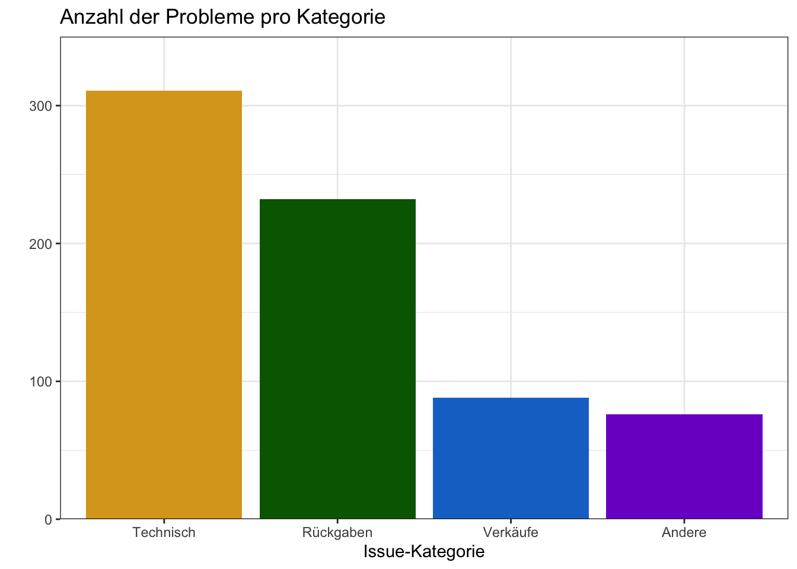
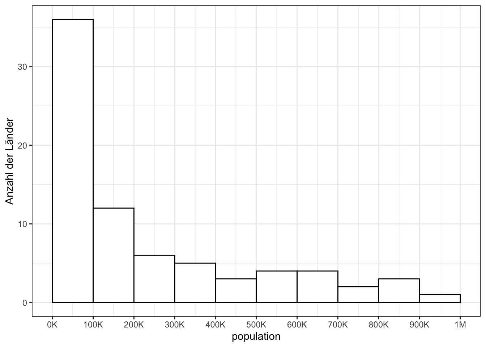
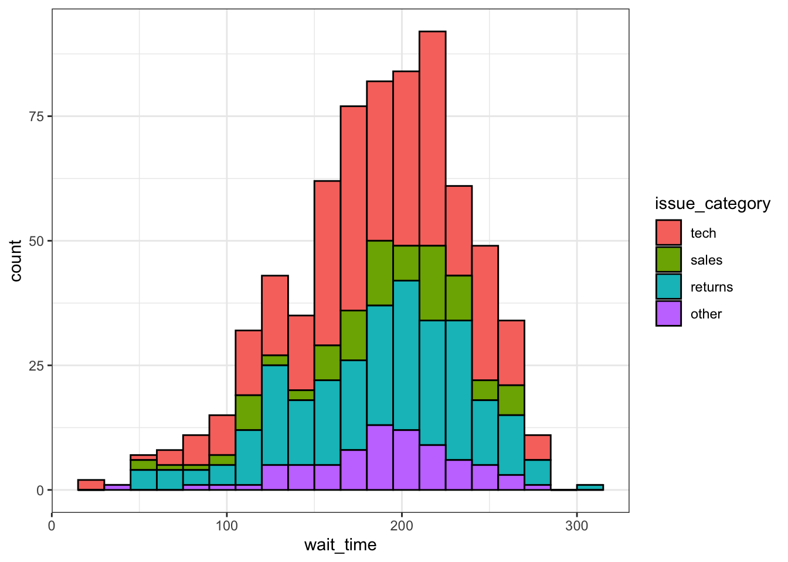
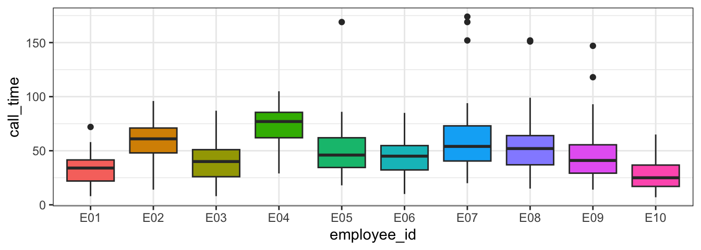

8 Datenvisualisierung
Beabsichtigte Lernergebnisse
- Kategorische und kontinuierliche Daten identifizieren können
- Plots schichtweise mit ggplot erstellen können
- Geeignete Plots für Daten auswählen können
8.2 Verwendete Funktionen
- integriert (diese können immer verwendet werden, ohne Pakete zu laden)
- tidyverse (alle diese können mit
library(tidyverse)verwendet werden)- readr::
col_character(),col_datetime(),col_double(),col_factor(),col_integer(),cols(),read_csv() - lubridate::
now(),today() - dplyr::
count(),glimpse(), - ggplot2::
aes(),coord_cartesian(),element_blank(),facet_wrap(),geom_bar(),geom_boxplot(),geom_col(),geom_histogram(),geom_jitter(),geom_point(),geom_smooth(),ggplot(),ggtitle(),guides(),scale_fill_manual(),scale_x_continuous(),scale_x_date(),scale_x_discrete(),scale_y_continuous(),spec(),stat_summary(),theme(),theme_bw(),theme_minimal(),theme_set()
- readr::
- andere (jedes Paket muss geladen werden, um diese zu verwenden)
- ggthemes::
theme_gdocs() - patchwork::
plot_layout()
- ggthemes::
In diesem Kapitel befassen wir uns mit der Datenvisualisierung mit dem Packet ggplot2. Laden Sie zuerst den ggplot2-Spickzettel herunter. Bevor wir uns mit dem Erstellen von Abbildungen beschäftigen, machen wir einen kurzen Rückblick zu den verschiedenen Variablentypen. Denn für die Erstellung von Abbildungen ist es wichtig, dass man weiss, mit welchen Variablentypen man es zu tun hat.
8.3 Variablentypen
Wir gehen davon aus, dass unsere Daten bereits im tidy Format sind. Wie bereits besprochen heisst dies, dass jede Zeile eine Beobachtung ist, jede Spalte eine Variable und jede Zelle den Wert einer Beobachtung einer bestimmten Variable (Spalte) enthält. Die unten aufgeführte Tabelle mit Haustieren und ihren BesitzerInnen ist in einem solchen tidy Format. Jede Zeile ist eine Beobachtung eines Haustieres, jede Spalte ist eine Variable, und jede Zelle enthält den Wert der einer Variable eines bestimmten Haustieres. Es gibt 6 Variablen für jedes Haustier, ihren name, owner, species, birthdate, weight (in kg) und rating (auf einer 5-Punkte-Skala von “very evil” bis “very good”).
| name | owner | species | birthdate | weight | rating |
|---|---|---|---|---|---|
| Darwin | Lisa | ferret | 1998-04-02 | 1.2 | a little evil |
| Oy | Lisa | ferret | NA | 2.9 | very good |
| Khaleesi | Emily | cat | 2014-10-01 | 4.5 | very good |
| Bernie | Phil | dog | 2017-06-01 | 32.0 | very good |
Wie wir bereits besprochen haben, können Variablen entweder kontinuierlich (z.B. weight) oder kategorisch (z.B. species) sein. Beim Erstellen von Abbildungen muss man sich zuerst bewusst sein, mit was für Variablen man es zu tun hat. Denn einige Abbildungen eignen sich nur für bestimmte Variablentypen. Jede Variable hat auch einen data type, wie zum Beispiel numeric (Zahlen), character (Text) oder logical (Wahr/Falsch-Werte). Einige Plots funktionieren nur mit bestimmten Datentypen. Außerdem hat ?sec-data-types mehr Details, da dieses Konzept wiederholt relevant sein wird.

8.3.1 Kontinuierlich
Continuous Variablen sind Eigenschaften, die man genau messen und in einer natürlichen Reihenfolge ordnen kann, wie zum Beispiel das Gewicht. Sie können kontinuierliche Variablen in mathematischen Operationen verwenden, wie zum Beispiel die Gesamtsumme einer Spalte von Preisen oder die durchschnittliche Anzahl von Likes in sozialen Medien pro Tag berechnen.
Kontinuierliche Variablen haben immer einen numeric Datentyp. Sie sind entweder integers wie 42 oder doubles wie 3.14159.
8.3.2 Kategorisch
Categorical Variablen sind Variablen, die nur eine bestimmte Anzahl an Kategorien haben (zum Beipsiel die Haustierart). Man unterscheidet dabei noch zwischen kategorialen Variablen, die keine natürliche Ordnung haben, sogenannte nominale Variablen <a href=‘https://psyteachr.github.io/glossary/n#nominal’ target=’_blank’ class=‘glossary’ title=‘Categorical variables that don’t have an inherent order, such as types of animal.’>nominal. Die Haustierart gehört zu diesem Typ. Es gibt aber auch kategoriale Variablen, die man ordnen kann. Dies sind dann sogenante ordinale Variablen ordinal. Aber auch hier gibt es nur eine begrenzte Anzahl Kategorien und die Abstände zwischen den verschiedenen Kategorien können oft nicht gleichgesetzt werden. Ein Beispiel dafür sind die Plätze 1 bis 3 an Sportwettkämpfen. Gold ist besser als Silber, was wiederum besser als Bronze ist. Der Abstand zwischen Gold-Silber und Silber-Bronze ist jedoch nicht identisch. Ein weiteres Beispiel für solche Variablen sind die Abstufungen auf Likert Bewertungsskala. Auch wenn eine Skale die Zahlen 1-7 verwendet, um ordinale Variablen darzustellen, sollten Sie sie nicht wie kontinuierliche Variablen behandeln (obwohl dies in der Praxis oft gemacht wird…).
In R kann man kategoriale Variablen auf zwei Arten speichern. Man kann sie mit dem Datentyp character oder auch strings genannt, speichern. Solche Variablen werden durch das Platzieren von Text in Anführungszeichen erstellt. Dieser Text kann Buchstaben, Satzzeichen oder sogar Zahlen enthalten. Zum Beispiel ist "January" eine Zeichenkette, aber auch "1", wenn Sie es in Anführungszeichen setzen. Dieser Datentyp ist am besten für Variablen geeignet, die viele verschiedene Werte haben können, die Sie nicht im Voraus vorhersagen können.
[1] "Lisa" "Emily" "Phil" Kategoriale Daten können auch factors sein, eine spezielle Art von Ganzzahl, die es Ihnen ermöglicht, die Kategorienamen und ihre Reihenfolge anzugeben. Dies ist nützlich, um Plots so anzuzeigen, dass die Kategorien in der von Ihnen gewünschten Reihenfolge erscheinen (ansonsten sind sie standardmäßig alphabetisch sortiert). Der Faktordatentyp ist am besten für Kategorien geeignet, die eine bestimmte Anzahl von Ebenen haben (z.B. “Gold”, “Silber”, “Bronze”).
factor Variable
factor()
Levels: Gold Silber Bronze8.3.3 Daten und Zeiten
Daten und Zeiten sind ein Sonderfall von Variablen. Sie können sich wie kategoriale oder kontinuierliche Variablen verhalten, und es gibt spezielle Möglichkeiten, sie zu plotten. Daten und Zeiten können schwierig zu handhaben sein, aber das [
[1] "2024-08-26 07:14:26 GMT"Wir gehen hier nicht näher auf diesen Datentyp ein.
Kehren Sie zum Haustierdatensatz zurück, welcher Variablentyp ist in jeder Spalte? Sie können die Funktion glimpse() verwenden, um eine Liste der Spaltennamen, ihrer Datentypen und der ersten Werte in jeder Spalte anzuzeigen - hier ist die Ausgabe von glimpse() auf dem Haustierdatensatz.
Rows: 4
Columns: 6
$ name <chr> "Darwin", "Oy", "Khaleesi", "Bernie"
$ owner <chr> "Lisa", "Lisa", "Emily", "Phil"
$ species <fct> ferret, ferret, cat, dog
$ birthdate <date> 1998-04-02, NA, 2014-10-01, 2017-06-01
$ weight <dbl> 1.2, 2.9, 4.5, 32.0
$ rating <fct> a little evil, very good, very good, very good| Spalte | Variablentyp | Datentyp |
|---|---|---|
name |
||
owner |
||
species |
||
birthdate |
||
weight |
||
rating |
8.4 Erstellen von Plots
Es gibt mehrere Ansätze zur Datenvisualisierung in R; in diesem Kurs werden wir das beliebte Paket tidyverse-Sammlung von Paketen ist. Eine Grammatik der Grafiken (das “gg” in “ggplot”) ist eine standardisierte Art, die Komponenten einer Grafik zu beschreiben.
Figure 8.1 zeigt die Entwicklung eines einfachen Streudiagramms mit diesem geschichteten Ansatz. Zuerst wird der Plot-Raum erstellt (Schicht 1); die Variablen werden angegeben (Schicht 2); die Art der Visualisierung (bekannt als geom), die für diese Variablen gewünscht wird, wird angegeben (Schicht 3) - in diesem Fall wird geom_point() aufgerufen, um einzelne Datenpunkte zu visualisieren; ein zweites Geom wird hinzugefügt, um eine Linie der besten Anpassung einzusch
ließen (Schicht 4), die Achsenbeschriftungen werden für eine bessere Lesbarkeit bearbeitet (Schicht 5), und schließlich wird ein Thema angewendet, um das Gesamterscheinungsbild des Plots zu ändern (Schicht 6).
Jede Schicht ist unabhängig und individuell anpassbar. Beispielsweise können die Größe, Farbe und Position jeder Komponente angepasst werden, oder man könnte beispielsweise das erste Geom (die Datenpunkte) entfernen, um nur die Linie der besten Anpassung zu visualisieren, indem man einfach die Schicht entfernt, die die Datenpunkte zeichnet (Figure 8.2). Die Verwendung von Schichten erleichtert den schrittweisen Aufbau komplexer Plots und die Anpassung oder Erweiterung von Plots aus vorhandenem Code.
8.4.1 Plotdaten laden
Um ein Gefühl für ‘ggplot’ zu bekommen, werden wir den obigen Plot Schritt-für-Schritt zusammen nachbauen. Als erstes laden wir die Daten:
Rows: 707 Columns: 7
── Column specification ────────────────────────────────────────────────────────
Delimiter: ","
chr (3): caller_id, employee_id, issue_category
dbl (3): wait_time, call_time, satisfaction
dttm (1): call_start
ℹ Use `spec()` to retrieve the full column specification for this data.
ℹ Specify the column types or set `show_col_types = FALSE` to quiet this message.read_csv() zeigt uns direkt, wie viele Zeilen uns Spalten die eingelsenen Daten haben und mit welchem Datentyp die Zeilen gespeichert wurden (“Column specification”).
Bei diesen Daten handelt es sich um simulierte Daten einer Kundenzufriedenheitsumfrage eines Callcenters. Bevor wir die Daten plotten, müssen wir uns mit ihnen vertraut machen. Was genau enthalten die Daten? Hier repräsentiert jede Zeile einen Anruf an das Zentrum.
-
caller_idist eine einzigartige ID für jeden Anrufer -
employee_idist eine einzigartige ID für jeden Mitarbeiter, der Anrufe entgegennimmt -
call_startist das Datum und die Uhrzeit, zu der der Anruf einging -
wait_timeist die Anzahl der Sekunden, die der Anrufer warten musste -
call_timeist die Anzahl der Sekunden, die der Anruf dauerte, nachdem der Mitarbeiter abgehoben hatte -
issue_categoryist, ob das Problem technischer Natur war, Verkauf, Rücksendungen oder anderes -
satisfactionist die Kundenzufriedenheitsbewertung auf einer Skala von 1 (sehr unzufrieden) bis 5 (sehr zufrieden)
Wenn man die Spaltentypen beim Einlesen nicht spezifiziert, werden Datenimportfunktionen einfach raten, um welche Typen es sich handelt, und normalerweise standardmäßig auf Double für Spalten mit Zahlen und Character für Spalten mit Buchstaben setzen. Verwenden Sie die Funktion spec(), um alle Spaltentypen herauszufinden und sie bei Bedarf zu bearbeiten.
cols(
caller_id = col_character(),
employee_id = col_character(),
call_start = col_datetime(format = ""),
wait_time = col_double(),
call_time = col_double(),
issue_category = col_character(),
satisfaction = col_double()
)Lassen Sie uns issue_category als Faktor festlegen und die Reihenfolge der Kategorien festlegen. Standardmäßig ordnet R die Kategorien eines Faktors alphanumerisch. Oft möchte man die Reihenfolge jedoch selber festlegen. In diesen Daten macht es am meisten Sinn, die Kategorie “other” am Ende der Liste zu haben. Nachdem Sie die Spaltentypen aktualisiert haben, müssen Sie die Daten erneut importieren, indem Sie den read_csv()-Code anpassen, um das Argument col_types auf die neuen Spaltentypen zu setzen.
Da read_csv() das Objekt survey_col_types verwenden wird, müssen Sie survey_col_types erstellen, bevor Sie den angepassten read_csv()-Code ausführen. Wenn Sie jemals Ihren Code anpassen müssen, versuchen Sie, über die Reihenfolge nachzudenken, in der der Code ausgeführt wird, wenn Sie von vorne beginnen, und stellen Sie sicher, dass er angemessen organisiert ist.
# aktualisierte Spaltentypen
survey_col_types <- cols(
caller_id = col_character(),
employee_id = col_character(),
call_start = col_datetime(format = ""),
wait_time = col_double(),
call_time = col_double(),
issue_category = col_factor(levels = c("tech", "sales", "returns", "other")),
satisfaction = col_integer()
)
# Daten erneut importieren mit korrekten Spaltentypen
survey_data <- read_csv("https://psyteachr.github.io/ads-v2/data/survey_data.csv",
col_types = survey_col_types)8.4.2 Plot-Setup
8.4.2.1 Daten
Jeder Plot beginnt mit der Funktion ggplot() und einem Datensatz. Für Übungszwecke ist es zu Beginn gut, den Plot schrittweise aufzubauen. Wie spezifizieren als ersten Schritt also nur, welche Daten für den Plot verwendet werden sollen. Dies genriert ein weisses Feld, sozusagen ein Platzhalter für den zu erschaffenden Plot.

8.4.2.2 Mapping
Das nächste argument zu ggplot() ist das mapping. Dies teilt dem Plot mit, welche Spalten/Variablen in den Daten durch welche Aspekte des Plots repräsentiert werden sollen. Diese Aspekte oder “Ästhetiken” werden innerhalb der Funktion aes() aufgelistet. Dabei handelt es sich um Sachen wie die x-Achse, y-Achse, Linienfarbe, Objektfüllung oder Linienstil.
Im Folgenden sagen wir ggplot durch das mapping Argument via die Funktion aes, dass die Variable wait_time auf der x-Achse und die Variable call_time auf der y-Achse abgebildet werden soll.
Legen Sie die Argumente x und y auf die Namen der Spalten fest, die Sie auf diesen Achsen plotten möchten. Hier möchten wir die Wartezeit auf der x-Achse und die Anrufzeit auf der y-Achse plotten. Dies füllt den Plot nun mit zwei Beschrifteten Achsen. In einem nächsten Schritt werden wir den Plot mit sogenannten geoms füllen.
# den Plot mit Mapping einrichten
ggplot(
data = survey_data,
mapping = aes(x = wait_time, y = call_time)
)Im obigen Beispiel haben wir die Namen der arguments data und mapping ausgeschrieben, aber in der Praxis lassen fast alle diese weg. Stellen Sie einfach sicher, dass Sie die Daten und das Mapping in der richtigen Reihenfolge platzieren.
8.4.2.3 Geoms
Nun können wir unsere Plot-Elemente schichtenweise hinzufügen. Diese Elemente werden als geoms bezeichnet und ihre Funktionen beginnen mit geom_. Man fügt Schichten zum Basis-Plot, der von ggplot() erstellt wurde, mit einem Plus (+) hinzu.

Etwas ärgerlicherweise muss das Plus am Ende der vorherigen Zeile stehen, nicht am Anfang der nächsten Zeile. Wenn Sie diesen Fehler machen, wird die erste Zeile des Codes ausgeführt, um die Basisschicht zu produzieren, aber dann erhalten Sie die folgende Fehlermeldung, anstatt geom_point() hinzuzufügen.

8.4.2.4 Mehrere Geoms
Ein Teil der Stärke von geom_ Teile spezifiziert. Geoms, die zuerst spezifiziert werden, werden auch zuerst angezeigt. Das kann dazu führen, dass spätere hinzugefügte Geoms früher hinzugefügte Geoms überdecken:
# Punkte zuerst
ggplot(survey_data, aes(x = wait_time, y = call_time)) +
geom_point() + # Streudiagramm
geom_smooth(method = lm) # Linie der besten Anpassung
# Linie zuerst
ggplot(survey_data, aes(x = wait_time, y = call_time)) +
geom_smooth(method = lm) + # Linie der besten Anpassung
geom_point() # Streudiagramm
8.4.2.5 Speichern von Plots
Genau wie man Zahlen und Datentabellen als Objekte speichern kann, kann man auch den durchggplot() erstellten plot speichern. Der untenstehende Code produziert dieselben Plots, die wir oben erstellt haben, speichert sie aber zu Objekten namens point_first und line_first. Wenn wir nur diesen Code ausführen, werden die Plots nicht angezeigt wie zuvor. Stattdessen sehen Sie die Objektnamen im Umgebungsbereich.
point_first <-
ggplot(survey_data, aes(x = wait_time, y = call_time)) +
geom_point() + # Streudiagramm
geom_smooth(method = lm) # Linie der besten Anpassung
line_first <-
ggplot(survey_data, aes(x = wait_time, y = call_time)) +
geom_smooth(method = lm) + # Linie der besten Anpassung
geom_point() # StreudiagrammDiese plots sind nun also Objekte, die wir zu einem späteren Zeitpunkt wieder abrufen oder weiterbearbeiten können.
Um die Plots anzuzeigen, rufen wir die Objekte beim Namen auf. Dies gibt jeden Plot separat aus.
8.4.2.6 Kombinieren von Plots
Einer der Gründe, wieso wir Plots in Objekten speichern besteht darin, dass man mehrere Plots mithilfe von Funktionen aus dem patchwork-Paket kombinieren kann. Der untenstehende Code produziert den schon oben gesehenen Plot (Figure 8.6), indem er die beiden Plots mit + kombiniert und dann angibt, dass wir die Plots auf einer einzigen Reihe mit dem nrow-Argument in plot_layout() produzieren möchten.
8.4.3 Anpassen von Plots
Es gibt nahezu endlose Möglichkeiten, ggplots anzupassen. Wir werden hier einige der grundlegenden Anpassungen behandeln.
8.4.3.1 Styling von Geoms
Wir sollten definitiv die Linie vor den Punkten platzieren, aber die Punkte sind immer noch etwas dunkel. Wenn man den allgemeinen Stil eines Geoms ändern möchten, kann man die Argumente colour, alpha, shape, size und linetype innerhalb der Geom-Funktion festlegen. Es gibt viele verschiedene Werte, auf die man diese einstellen kann; ?sec-plotstyle gibt Details dazu. Probieren Sie verschiedene Werte unten aus und finden Sie heraus, was die default values für shape und size sind.
ggplot(survey_data, aes(x = wait_time, y = call_time)) +
geom_point(colour = "dodgerblue",
alpha = 0.2, # 20 % Transparenz
shape = 18, # solider Diamant
size = 2) +
geom_smooth(method = lm,
formula = y~x, # Formel zum Zeichnen der Linie,
# Festlegung von Methode und Formel vermeidet eine ärgerliche Nachricht
colour = rgb(0, .5, .8),
linetype = 3) Diese Methode dient nur dazu, den Stil aller Elemente zu ändern, die mit diesem Geom erstellt wurden. Wenn Sie möchten, dass zum Beispiel Punkte je nach Ausgabekategorie unterschiedliche Farben haben, legen Sie das Argument colour = issue_category innerhalb der Funktion aes() für das Mapping fest. Sie können die verwendeten Farben mit scale_-Funktionen anpassen, die Sie unten und in ?sec-plotstyle lernen werden).
8.4.3.2 Achsen formatieren
Nun müssen wir die Achsen ordentlicher beschriften Es gibt mehrere Funktionen, mit denen man die Achsenbeschriftungen ändern kann, aber die leistungsfähigsten sind die scale_-Funktionen. Sie müssen eine Skalenfunktion verwenden, die zu den Daten passt, die Sie auf dieser Achse plotten, und hier wird es besonders wichtig zu wissen, mit welchem Datentyp man arbeitet. Beide Achsen hier sind continuous, daher verwenden wir scale_x_continuous() und scale_y_continuous().
Das Argument name ändert die Achsenbeschriftung. Das Argument breaks legt die Haupteinheiten fest und benötigt einen vector möglicher Werte, der auch über den Bereich der Daten hinausgehen kann. Die Funktion seq() erstellt eine Folge von Zahlen from einer to einer anderen by festgelegten Schritten:
ggplot(survey_data, aes(x = wait_time, y = call_time)) +
geom_point(colour = "dodgerblue",
alpha = 0.2) +
geom_smooth(method = lm,
formula = y~x,
colour = rgb(0, .5, .8)) +
# Achsenbeschriftungen und Unterbrechungen anpassen
scale_x_continuous(name = "Wartezeit (Sekunden)",
breaks = seq(from = 0, to = 600, by = 60)) +
scale_y_continuous(name = "Anrufzeit (Sekunden)",
breaks = seq(from = 0, to = 600, by = 30))Überprüfen Sie die Hilfe zu ?scale_x_continuous, um zu sehen, wie Sie die kleineren Einheiten festlegen oder angeben würden, wie viele Unterbrechungen Sie möchten.
labs Funktion
Man kann die Achsen auch über die labs Funktion beschriften. Dies kann dann nützlich sein, wenn man an den Achsen sonst nichts anpassen muss:
8.4.3.3 Achsengrenzen
Wenn man die minimalen und maximalen Werte auf einer Achse ändern möchte, verwendet man die Funktion coord_cartesian(). Viele Plots sind sinnvoller, wenn die minimalen und maximalen Werte den Bereich möglicher Werte darstellen, auch wenn diese Werte nicht in den Daten vorhanden sind. Hier können Warte- und Anrufzeiten nicht weniger als 0 Sekunden betragen, also legen wir die Minimalwerte auf 0 und die Maximalwerte auf die erste Unterbrechung über dem höchsten Wert fest.
ggplot(survey_data, aes(x = wait_time, y = call_time)) +
geom_point(colour = "dodgerblue",
alpha = 0.2) +
geom_smooth(method = lm,
formula = y~x,
colour = rgb(0, .5, .8)) +
scale_x_continuous(name = "Wartezeit (Sekunden)",
breaks = seq(from = 0, to = 600, by = 60)) +
scale_y_continuous(name = "Anrufzeit (Sekunden)",
breaks = seq(from = 0, to = 600, by = 30)) +
# Achsengrenzen festlegen
coord_cartesian(xlim = c(0, 360),
ylim = c(0, 180))Sie können auch das Argument limits innerhalb der scale_-Funktionen festlegen, aber dies entfernt tatsächlich alle Daten, die außerhalb dieser Grenzen liegen, anstatt Ihren Plot zu beschneiden, und dies kann das Erscheinungsbild bestimmter Plot-Typen wie Violin-Plots und Dichtegraphen ändern. Deshalb sollte die scale_ Funktion dafür nicht verwendet werden.
8.4.3.4 Themes
Damit man für das ästhetische “Finetuning” des Plots nicht immer alle Werte selber spezifizieren muss, gibt es eine Reihe von sogenannten Themes die Plots in einem besetimmten Design erscheinen lassen. theme_minimal() und theme_bw(), aber das base_size.
ggplot(survey_data, aes(x = wait_time, y = call_time)) +
geom_point(colour = "dodgerblue",
alpha = 0.2) +
geom_smooth(method = lm,
formula = y~x,
colour = rgb(0, .5, .8)) +
scale_x_continuous(name = "Wartezeit (Sekunden)",
breaks = seq(from = 0, to = 600, by = 60)) +
scale_y_continuous(name = "Anrufzeit (Sekunden)",
breaks = seq(from = 0, to = 600, by = 30)) +
coord_cartesian(xlim = c(0, 360),
ylim = c(0, 180)) +
# das Theme ändern
ggthemes::theme_excel(base_size = 20)Das Resultat ist nicht gerade ansprechend. Das steht auch ausdrücklich in der Dokumentation der Funktion ggthemes::theme_excel: “Theme to replicate the ugly monstrosity that was the old gray-background Excel chart. Please never use this.”
Versuchen wir es also mit einem anderen theme:
ggplot(survey_data, aes(x = wait_time, y = call_time)) +
geom_point(colour = "dodgerblue",
alpha = 0.2) +
geom_smooth(method = lm,
formula = y~x,
colour = rgb(0, .5, .8)) +
scale_x_continuous(name = "Wartezeit (Sekunden)",
breaks = seq(from = 0, to = 600, by = 60)) +
scale_y_continuous(name = "Anrufzeit (Sekunden)",
breaks = seq(from = 0, to = 600, by = 30)) +
coord_cartesian(xlim = c(0, 360),
ylim = c(0, 180)) +
# das Theme ändern
ggthemes::theme_economist(base_size = 20)Der Plot sieht mit dem Theme der Zeitschrift Economist schon deutlich besser aus.
8.4.3.5 Theme-Anpassungen
Wenn wir mit einem Theme immer noch nicht ganz zufrieden sind, können wir es mit der Funktion themes() weiter anpassen. Überprüfen Sie die Hilfe für diese Funktion, um alle möglichen Optionen zu sehen (mit ?themes, die Liste der zu ändernden Elemente ist ziemlich lang). Oft will man, anstatt ein Elment zu ändern, ein Element komplett entfernen. Dies tut man, indem man das relvante Argument auf element_blank() setzt. Unten entfernen wir die x-Achsenlinie und den Plot-Hintergrund:
ggplot(survey_data, aes(x = wait_time, y = call_time)) +
geom_point(colour = "dodgerblue",
alpha = 0.2) +
geom_smooth(method = lm,
formula = y~x,
colour = rgb(0, .5, .8)) +
scale_x_continuous(name = "Wartezeit (Sekunden)",
breaks = seq(from = 0, to = 600, by = 60)) +
scale_y_continuous(name = "Anrufzeit (Sekunden)",
breaks = seq(from = 0, to = 600, by = 30)) +
coord_cartesian(xlim = c(0, 360),
ylim = c(0, 180)) +
theme_gdocs(base_size = 11) +
# Theme-Elemente anpassen
theme(axis.line.x = element_blank(),
plot.background = element_blank())8.4.4 Plotbeschriftungen
Oft möchte man Plots auch mit Titel und/oder Untertitel versehen. Dies können wir mit der bereits kennengelernten Funktion labs tun:
ggplot(survey_data, aes(x = wait_time, y = call_time)) +
geom_point(colour = "dodgerblue",
alpha = 0.2) +
geom_smooth(method = lm,
formula = y~x,
colour = rgb(0, .5, .8)) +
scale_x_continuous(name = "Wartezeit (Sekunden)",
breaks = seq(from = 0, to = 600, by = 60)) +
scale_y_continuous(name = "Anrufzeit (Sekunden)",
breaks = seq(from = 0, to
= 600, by = 30)) +
coord_cartesian(xlim = c(0, 360),
ylim = c(0, 180)) +
theme_gdocs(base_size = 11) +
theme(axis.line.x = element_blank(),
plot.background = element_blank()) +
labs(title = "Die Beziehung zwischen Wartezeit und Anrufzeit",
subtitle = "Anrufdaten 2020",
caption = "Abbildung 1. Mit zunehmender Wartezeit steigt die Anrufzeit.")8.5 Geeignete Plots
Der Aufbau von Plots, wie wir ihn gerade gelernt haben, ist immer gleich. Man muss jedoch die Art des Plots den Daten(typen) anpassen, die man plotten will. Entsprechend ist dieser Abschnitt nach Datentypen strukturiert.
Der ggplot2-Spickzettel ist eine großartige Ressource die dabei hilft, Plots zu finden, die zu den Daten passen.
Die untenstehenden Beispiele verwenden alle dieselben Kundenzufriedenheitsdaten, aber jeder Plot kommuniziert etwas anderes.
Es wird nicht erwartet, dass Sie sich alle Plot-Typen oder die Methoden zur Anpassung merken, aber es wird hilfreich sein, den Code in den folgenden Beispielen selbst auszuprobieren, indem Sie Werte ändern, um Ihr Verständnis zu testen.
8.5.1 Kategorien zählen
8.5.1.1 Balkendiagramm
Wenn Sie die Anzahl Beobachtungen pro Kategorie zählen möchten, können Sie geom_bar() verwenden. Sie müssen nur eine x-Zuordnung zu geom_bar() bereitstellen, denn standardmäßig verwendet geom_bar() die Anzahl der Beobachtungen in jeder Gruppe von x als Wert für y, sodass Sie ggplot nicht mitteilen müssen, was auf der y-Achse stehen soll.
Sie möchten wahrscheinlich einige Dinge anpassen, wie die Farben, die Reihenfolge der Spalten und ihre Beschriftungen. Untersuchen Sie den untenstehenden Code und versuchen Sie, ihn Schicht für Schicht auszuführen, um herauszufinden, wo sich diese Dinge ändern. Die Funktionen scale_fill_manual() und scale_x_discrete() sind neu, funktionieren aber auf die gleiche Weise wie die anderen scale_-Funktionen. Sie lernen mehr darüber in ?sec-custom-viz.
ggplot(survey_data, aes(x = issue_category,
fill = issue_category)) +
geom_bar() +
scale_x_discrete(
# Achsentitel ändern
name = "Issue-Kategorie",
# Reihenfolge ändern
limits = c("tech", "returns", "sales", "other"),
# Beschriftungen ändern
labels = c("Technisch", "Rückgaben", "Verkäufe", "Andere")
) +
scale_fill_manual(
# Farben ändern
values = c(tech = "goldenrod",
returns = "darkgreen",
sales = "dodgerblue3",
other = "purple3"),
# die Legende entfernen
guide = "none"
) +
scale_y_continuous(
name = "", # Achsentitel entfernen
# den Raum oberhalb und unterhalb der y-Achse entfernen
expand = expansion(add = 0)
) +
# Minimum = 0, Maximum = 350
coord_cartesian(ylim = c(0, 350)) +
ggtitle("Anzahl der Probleme pro Kategorie") # einen Titel hinzufügen
8.5.1.2 Säulendiagramm
Wenn Ihre Daten bereits eine Spalte mit der Anzahl enthalten, die Sie plotten möchten, können Sie geom_col() verwenden, um sie zu plotten. Wir können die Funktion count() verwenden, um eine Tabelle mit einer Zeile für jede issue_category und einer Spalte namens n mit der Anzahl der Beobachtungen in dieser Kategorie zu erstellen.
| issue_category | n |
|---|---|
| tech | 311 |
| sales | 88 |
| returns | 232 |
| other | 76 |
Das Mapping für geom_col() erfordert, dass Sie sowohl die x- als auch die y-Ästhetik festlegen. Setzen Sie y = n, weil wir die Anzahl der Probleme in jeder Kategorie plotten möchten, und diese Information befindet sich in der Spalte namens n.
8.5.1.3 Tortendiagramm
Tortendiagramme sind eine irreführende Form der Datenvisualisierung, daher werden wir sie nicht behandeln. Wir werden andere Methoden behandeln, die sich besser für die Visualisierung von Anteilen handeln.
Hier ist eine kleine Datentabelle.
| country | population | island |
|---|---|---|
| Nordirland | 1,895,510 | Irland |
| Wales | 3,169,586 | Großbritannien |
| Republik Irland | 4,937,786 | Irland |
| Schottland | 5,466,000 | Großbritannien |
| England | 56,550,138 | Großbritannien |
- Welches Geom würden Sie verwenden, um die Bevölkerung für jedes der 5 Länder zu plotten?
- Welches Mapping würden Sie verwenden?
- Welches Geom würden Sie verwenden, um die Anzahl der Länder auf jeder Insel zu plotten?
- Welches Mapping würden Sie verwenden?
8.5.2 Plots mit einer kontinuierlichen Variable
Wenn Sie eine kontinuierliche Variable haben, wie die Anzahl der Sekunden, die Anrufer warten mussten, können Sie geom_histogram() verwenden, um die Verteilung der Variable zu visualisieren. Genau wie bei geom_bar() muss man dabei nur die x-Variable angeben.
Ein Histogramm teilt die Daten in “Bins” entlang der x-Achse auf und zeigt die Anzahl der Beobachtungen in jedem Bin entlang der y-Achse.
`stat_bin()` using `bins = 30`. Pick better value with `binwidth`.Sie sollten immer die binwidth oder die Anzahl der bins auf etwas Sinnvolles für Ihre Daten festlegen (wie per Mitteilung angegeben ist der Default 30 bins, was mehr oder meist weniger sinnvoll sein kann). Sie müssen möglicherweise einige Optionen ausprobieren, bevor Sie etwas finden, das gut aussieht und die Verteilung der Variable gut darstellt – versuchen Sie, die Werte von binwidth und bins unten zu ändern, um zu sehen, was am besten funktioniert.
Standardmäßig beginnen die Balken zentriert auf 0, also wenn binwidth auf 30 eingestellt ist, würde der erste Balken -15 bis 15 Sekunden umfassen, was keinen Sinn macht. Wir können boundary = 0 setzen, damit jeder Balken 30-Sekunden-Inkremente ab 0 darstellt.
Schließlich ist der Standardstil von grauen Balken hässlich, also können Sie das ändern, indem Sie fill und colour festlegen, sowie scale_x_continuous() verwenden, um die Achsenbeschriftungen zu aktualisieren.
ggplot(survey_data, aes(x = wait_time)) +
geom_histogram(binwidth = 15,
boundary = 0,
fill = "white",
color = "black") +
scale_x_continuous(name = "Wartezeit (Sekunden)",
breaks = seq(0, 600, 60))
Stellen Sie sich vor, Sie haben eine Tabelle mit der Bevölkerung für jedes Land der Welt mit den Spalten country und population. Wir werden uns nur die 76 Länder mit Bevölkerungen unter einer Million ansehen.

- Wie würden Sie das Mapping für diesen Plot festlegen?
- Was ist die
binwidthdes Histogramms?
8.5.3 Gruppierte kontinuierliche Variablen
Es gibt mehrere Möglichkeiten, kontinuierliche Daten über Gruppen hinweg zu vergleichen. Welche Sie wählen, hängt davon ab, was sie mit dem Plot zeigen möchten.
8.5.3.1 Gestapeltes Histogramm
In vorherigen Plots haben wir fill rein aus optischen Gründen verwendet, z. B. haben wir die Farbe der Histogrammbalken geändert, um sie schöner zu machen. Sie können jedoch auch fill verwenden, um eine andere Variable darzustellen, so dass die Farben bedeutungsvoll werden.
Das Festlegen der fill-Ästhetik im Mapping erzeugt unterschiedlich gefärbte Balken für jede Kategorie der fill-Variablen, in diesem Fall issue_category. Somit sehen wir die Verteilung der Wartezeit für jede issue_category. Dadurch lassen sich gut Unterschiede in den Wartezeiten zwischen den issue_category Kategorien erkennen.
ggplot(survey_data, aes(x = wait_time, fill = issue_category)) +
geom_histogram(boundary = 0,
binwidth = 15,
color = "black")
Wenn Sie einen Aspekt festlegen, um die Daten darzustellen, tun Sie dies innerhalb der Funktion aes() für das Mapping, nicht als Argument zum Geom. Wenn Sie versuchen, dies in einem Geom zu setzen, erhalten Sie die folgende Fehlermeldung (es sei denn, Sie haben zufällig ein Objekt namens issue_category, das ein Farbwort ist).
8.5.3.2 Ausgewürfeltes Histogramm
Standardmäßig werden die Kategorien übereinander gestapelt positioniert. Wenn Sie mehr als eine Verteilung vergleichen möchten, können Sie das Argument position von geom_histogram() auf “dodge” setzen, um die Balken für jede Gruppe nebeneinander statt übereinander zu platzieren. Dies kann jedoch mit mehreren Kategorien verwirrend aussehen.
# ausgewürfeltes Histogramm
ggplot(survey_data, aes(x = wait_time,
fill = issue_category,
colour = issue_category))+
geom_histogram(boundary = 0,
binwidth = 15,
position = "dodge") +
scale_x_continuous(name = "Wartezeit (Sekunden)",
breaks = seq(0, 600, 60))Alternativ können Sie geom_freqpoly() verwenden, um eine Linie zu zeichnen, die die Oberseite jedes Bins verbindet (siehe ?sec-freqpoly).
# Häufigkeitsplot
ggplot(survey_data, aes(x = wait_time,
colour = issue_category)) +
geom_freqpoly(binwidth = 15,
boundary = 0,
size = 1) +
scale_x_continuous(name = "Wartezeit (Sekunden)",
breaks = seq(0, 600, 60))Warning: Using `size` aesthetic for lines was deprecated in ggplot2 3.4.0.
ℹ Please use `linewidth` instead.8.5.3.3 Boxplot
Eine weitere Möglichkeit, Gruppen von kontinuierlichen Variablen zu vergleichen, sind Boxplots. Sie zeigen nicht die Form der Verteilung, sondern visualisieren einige aussagekräftige Statistiken darüber. Die mittlere Linie stellt den median dar; die Hälfte der Daten/Beobachtungen liegt über dieser Linie und die Hälfte darunter. Die Box umschließt das 25. bis 75. Perzentil der Daten, also fallen 50% der Daten in die Box. Die “Whisker”, die ober- und unterhalb der Box herausragen, erstrecken sich 1,5-mal so hoch wie die Box, obwohl Sie dies mit dem Argument coef ändern können. Die Punkte zeigen outliers – einzelne Datenpunkte, die außerhalb dieses Bereichs liegen.
Boxplots können horizontal sein, wenn Sie die x- und y-Spalten tauschen, und es gibt viele andere Anpassungen, die Sie anwenden können.
boxplot <- ggplot(survey_data, aes(x = issue_category, y = wait_time)) +
geom_boxplot() +
ggtitle("Standard-Vertikal-Boxplot")
custom <- ggplot(survey_data, aes(y = issue_category,x = wait_time)) +
geom_boxplot(fill = "grey80",
outlier.colour = "red",
outlier.shape = 8,
coef = 1, # Länge der Whisker relativ zur Box
varwidth = TRUE, # Breite proportional zur Stichprobengröße setzen
notch = TRUE) +
ggtitle("Angepasster Horizontal-Boxplot")
boxplot + customHäufig werden anstatt Verteilungen, wie zum Beispiel mit dem Boxplot, nur einzelne Statistiken, zum Beispiel der Mittelwert, geplottet. Dies kann sehr irreführend sein, da es die Verteilung der Rohwerte nicht veranschaulicht und die Unterschiede deshalb grösser aussehen können, als sie tatsächlich sind. So sehen die Unterschiede in den Mittelwerten im Plot unten links deutlich dramatischer aus, als dies aus den Daten eigentlich hervorgeht (vgl. Boxplot oben).
Der Effekt sieht aber nur so dramatisch aus, weil die x-Achse nicht bei 0 beginnt. Plotten wir den gesamten Range der Daten (rechter plot) sehen wir, dass es fast keine Unterschiede gibt. Achten sie immer darauf, was sie mit einer Abbildung aussagen möchten. Und wie man sieht, kann man den plot entsprechend der gewünschten Aussage wählen. Später werden wir sehen, wie mann solche Plots mit Massen wie Konfidenzintervallen ergänzen kann, um dem etwas entgegenzuwirken.

- Wie würden Sie den Plot erstellen?
- Wie sieht das Mapping für den Plot aus?
- Welcher Mitarbeiter hat die längste mediane Anrufzeit?
- Welcher Mitarbeiter hat die längste Anrufzeit?
8.5.4 Zwei kontinuierliche Variablen
Wenn Sie sehen möchten, wie zwei kontinuierliche Variablen zusammenhängen, legen Sie eine als x-Achse und die andere als y-Achse fest. Normalerweise, wenn eine Variable die andere verursacht, plotten Sie die Ursache auf der x-Achse und die Wirkung auf der y-Achse. Hier möchten wir sehen, ob längere Wartezeiten dazu führen, dass die Anrufe länger dauern.
8.5.4.1 Streudiagramm
Die Funktion zur Erstellung eines Streudiagramms heißt geom_point().
8.5.4.2 Trendlinien
In Figure 8.1 haben wir die Beziehung zwischen Wartezeit und Anrufzeit mit einer Trendlinie betont, die durch geom_smooth() mit dem Argument method = lm erstellt wurde (“lm” steht für “lineares Modell”, also die Trendlinie einer linearen Regression). Sie können auch method = loess einstellen, um eine nichtlineare Beziehung zu visualisieren.
lm_plot <-
ggplot(survey_data, aes(x = wait_time, y = call_time)) +
geom_point(alpha = 0.2) +
geom_smooth(method = lm, formula = y~x) +
ggtitle("method = lm")
loess_plot <-
ggplot(survey_data, aes(x = wait_time, y = call_time)) +
geom_point(alpha = 0.2) +
geom_smooth(method = loess, formula = y~x) +
ggtitle("method = loess")
lm_plot + loess_plotWenn es nicht viele Daten an den Extremen der x-Achse gibt, kann die Kurve sehr unsicher sein. Dies wird durch den breiteren schattierten Bereich dargestellt, was bedeutet, dass die wahre Beziehung irgendwo innerhalb dieses Bereichs liegen könnte. Fügen Sie das Argument se = FALSE zu geom_smooth() hinzu, um diese “Standardfehler”-Schattierung zu entfernen.
8.5.4.3 Daten
Die Spalte call_start enthält sowohl ein Datum als auch eine Uhrzeit, also verwenden wir die Funktion date() aus
ggplot(survey_data, aes(x = lubridate::date(call_start),
y = satisfaction)) +
geom_smooth(method = lm, formula = y~x)Wir können scale_x_date() verwenden, um die date_breaks auf “1 Monat” Abstand einzustellen. Das Argument date_labels verwendet einen Code für verschiedene Datumsformate; Sie können die vollständige Liste der Möglichkeiten in der Hilfe für ?strptime sehen. Zum Beispiel bedeutet %b “Abgekürzter Monatsname”, während Sie für ein Format wie “2020/01/31” "%Y/%m/%d" ausprobieren könnten.
ggplot(survey_data, aes(x = lubridate::date(call_start),
y = satisfaction)) +
geom_smooth(method = lm, formula = y~x) +
scale_x_date(name = "",
date_breaks = "1 month",
date_labels = "%b") +
scale_y_continuous(name = "Kundenzufriedenheit") +
ggtitle("Kundenzufriedenheit 2020")Es sieht so aus, als würde die Kundenzufriedenheit im Laufe des Jahres abnehmen, aber ist diese Änderung bedeutend? Sehen Sie, wie der Plot aussieht, wenn die y-Achse den vollen Bereich möglicher Zufriedenheitswerte von 1 bis 5 umfasst. Sie können auch die einzelnen Datenpunkte plotten, um den Bereich der Werte zu betonen.
ggplot(survey_data, aes(x = lubridate::date(call_start),
y = satisfaction)) +
# einzelne Daten anzeigen, die Höhe leicht versetzen, um Überlappungen zu vermeiden
geom_jitter(width = 0, height = .1, alpha = 0.2) +
geom_smooth(method = lm, formula = y~x) +
scale_x_date(name = "",
date_breaks = "1 month",
date_labels = "%b") +
scale_y_continuous(name = "Kundenzufriedenheit",
breaks = 1:5) +
coord_cartesian(ylim = c(1, 5)) + # Grenzen ändern
ggtitle("Kundenzufriedenheit 2020")
8.5.5 Überlagerung
Wenn Sie einen begrenzten Bereich numerischer Werte haben, wie z.B. eine ordinale Bewertungsskala, könnnen manchmal überlappende Daten das Verständnis eines Punktdiagramms erschweren. Zum Beispiel zeigt der folgende Plot Zufriedenheitsbewertungen nach Anrufzeit, aber weil alle Bewertungen 1, 2, 3, 4 oder 5 sind, ist es schwer zu sehen, wie viele Datenpunkte an jedem Punkt sind.
In diesem Abschnitt werden wir einige Optionen zur Bewältigung des Überlagerungsproblems erkunden.

8.5.5.1 Jitter-Diagramm
Sie können geom_jitter() verwenden, um die Punkte etwas zu verschieben, um sie besser sichtbar zu machen. Hier ist die x-Achse kontinuierlich, daher besteht keine Notwendigkeit, die width zu jittern, aber die y-Achse sind ordinale Kategorien, daher wird die height zwischen -0,2 und +0,2 vom wahren y-Wert gejittert. Eine andere oder weitere Möglichkeit ist es, die Punkte etwas transparent zu machen.
8.5.5.2 Facetten
Alternativ können wir facet_wrap() verwenden, um für jede Zufriedenheitsstufe ein separates Diagramm zu erstellen. facet_wrap() verwendet das Tilde (~) Symbol, das Sie grob als “nach” übersetzen können, z.B. facettiere das Diagramm nach Zufriedenheitsbewertung. Die labeller-Funktion steuert die Beschriftungen über jedem Plot. label_both gibt an, dass wir sowohl den Variablennamen (satisfaction) als auch den Wert (z.B. 1) auf dem Plot abbilden möchten, um es einfacher lesbar zu machen.
ggplot(survey_data, aes(x = call_time)) +
geom_histogram(binwidth = 10,
boundary = 0,
fill = "dodgerblue",
color = "black") +
facet_wrap(~satisfaction,
ncol = 1, # versuchen Sie dies auf 2 zu ändern
labeller = label_both) +
scale_x_continuous(name = "Anrufzeit (Sekunden)",
breaks = seq(0, 600, 30))Dies sind nicht alle Plot-Typen, die Sie in R erstellen können. Dieses Kapitel gab Ihnen nur einen grundlegenden Überblick, und wir werden im Detail in ?sec-custom-viz eingehen. Der Abschnitt weitere Ressourcen am Ende dieses Kapitels listet viele Ressourcen auf, aber die R Graph Gallery ist besonders nützlich, um Inspiration für die Arten von schönen Plots zu erhalten, die Sie in R erstellen können.
8.6 Übungen
Als letzten Schritt in diesem Kapitel werden wir einen Bericht über Datenvisualisierungen erstellen. Möglicherweise müssen Sie auf Chapter 2 zurückgreifen, um Ihnen bei der Durchführung dieser Übungen zu helfen, und Sie möchten vielleicht auch eine Pause einlegen, bevor Sie diesen Abschnitt bearbeiten. Wir empfehlen Ihnen auch, bei jedem Schritt knit zu verwenden, damit Sie sehen können, wie sich Ihre Ausgabe ändert.
8.6.1 Neues Markdown
Erstellen und speichern Sie ein neues R Markdown-Dokument mit dem Namen plots_report.Rmd und geben Sie ihm den Titel “Bericht zur Kundenzufriedenheit”. Entfernen Sie den Standardvorlagentext und laden Sie dann die unten stehenden Pakete und Code im Setup-Code-Block:
8.6.2 Zusammenfassung
Erstellen Sie eine Überschrift der Ebene 1 mit dem Titel “Überblick”. Unter dieser Überschrift schreiben Sie eine kurze Zusammenfassung dessen, was der Datensatz enthält und was jede der Variablen bedeutet (Sie können die Informationen aus Section 8.4.1 verwenden, wenn Sie möchten).
8.6.3 Präsentation von Plots
Wählen Sie Ihre beiden Lieblingsplots aus allen Beispielen, die wir in diesem Kapitel erstellt haben. Für jeden Plot:
- Erstellen Sie eine Überschrift der Ebene 2 in Ihrem R Markdown-Dokument und geben Sie ihr einen informativen Titel.
- Schreiben Sie eine kurze Zusammenfassung, die die in den Plots dargestellten Daten interpretiert - es reicht nicht aus, nur Visualisierungen zu präsentieren, effektive Berichte werden dem Leser auch helfen, die Schlussfolgerungen zu verstehen, die sie aus den präsentierten Plots ziehen sollten.
- Sehen Sie sich die verschiedenen verfügbaren Themen mit
ggtheme an und wählen Sie eines aus, um es auf Ihre Plots anzuwenden. - Stellen Sie sicher, dass jeder Plot eine Bildunterschrift hat (entweder indem Sie diese zum
ggplot()-Code hinzufügen oder sie zu den Code-Block-Optionen hinzufügen). - Organisieren Sie Ihr Markdown so, dass die Plots nach der Textzusammenfassung angezeigt werden.
8.6.4 Kombination von Plots
Wählen Sie nun Ihre beiden am wenigsten bevorzugten Plots aus:
- Passen Sie die visuellen Ästhetiken an, um sie so schlecht und so schwer lesbar wie möglich zu machen.
- Kombinieren Sie die Plots mit der Originalversion unter Verwendung von Patchwork-Funktionen.
- Schreiben Sie eine kurze Zusammenfassung, die erklärt, warum Sie diese Plots so schlecht finden.
- Organisieren Sie Ihr Markdown so, dass die Plots nach der Textzusammenfassung angezeigt werden.
8.6.5 Bearbeiten Ihrer Markdown-Anzeige
Passen Sie das Setup Ihres Markdowns so an, dass Ihr gestrickter Bericht keinen Code, keine Nachrichten oder Warnungen anzeigt und alle Abbildungen 8 x 5 groß sind (siehe Section 2.7.1).
8.6.6 Teilen Sie Ihre Arbeit
Sobald Sie diese Aktivität abgeschlossen haben, posten Sie sie im Kanal Woche 3 auf Teams, damit Sie vergleichen können, welche Plots Sie ausgewählt haben und welchen visuellen Stil mit anderen Lernenden auf dem Kurs.
8.7 Glossar
| term | definition |
|---|---|
| argument | A variable that provides input to a function. |
| categorical | Data that can only take certain values, such as types of pet. |
| character | A data type representing strings of text. |
| continuous | Data that can take on any values between other existing values. |
| continuous | Data that can take on any values between other existing values. |
| data-type | The kind of data represented by an object. |
| default-value | A value that a function uses for an argument if it is skipped. |
| double | A data type representing a real decimal number |
| factor | A data type where a specific set of values are stored with labels; An explanatory variable manipulated by the experimenter |
| geom | The geometric style in which data are displayed, such as boxplot, density, or histogram. |
| integer | A data type representing whole numbers. |
| knit | To create an HTML, PDF, or Word document from an R Markdown (Rmd) document |
| likert | A rating scale with a small number of discrete points in order |
| logical | A data type representing TRUE or FALSE values. |
| median | The middle number in a distribution where half of the values are larger and half are smaller. |
| nominal | Categorical variables that don't have an inherent order, such as types of animal. |
| numeric | A data type representing a real decimal number or integer. |
| ordinal | Discrete variables that have an inherent order, such as level of education or dislike/like. |
| outlier | A data point that is extremely distant from most of the other data points |
| string | A piece of text inside of quotes. |
| vector | A type of data structure that collects values with the same data type, like T/F values, numbers, or strings. |
8.8 Weitere Ressourcen
- ggplot2-Spickzettel
- Datenvisualisierung mit R für Forscher, die kein R verwenden (Nordmann et al., 2021)
- Kapitel 1: Datenvisualisierung aus R für Datenwissenschaft
- ggplot2 FAQs
- ggplot2-Dokumentation
- [Hack Your Data Beautiful](https://psyteachr.github